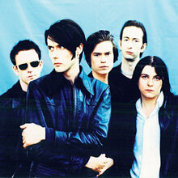
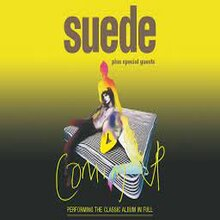
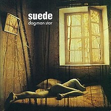
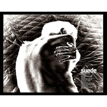

<!--2372036_Muhammad Sava Akbar Bastaman_B-->
<!DOCTYPE html>
<html lang="en">
<head>
    <meta charset="UTF-8">
    <meta name="viewport" content="width=device-width, initial-scale=1.0">
    <title>Suede</title>
    <link rel="stylesheet" href="styl.css">
    <link rel="stylesheet" href="style3.css">
    <link rel="preconnect" href="https://fonts.googleapis.com">
    <link rel='stylesheet' id='theme-font-awesome-css' href='//use.fontawesome.com/releases/v5.14.0/css/all.css' type='text/css' media='all' />
    <link rel="stylesheet" href="https://cdnjs.cloudflare.com/ajax/libs/font-awesome/4.7.0/css/font-awesome.min.css">
    <link rel="preconnect" href="https://fonts.gstatic.com" crossorigin>
    <link href="https://fonts.googleapis.com/css2?family=Abril+Fatface&family=Amiri:ital@1&family=Girassol&family=Titan+One&display=swap" rel="stylesheet">
    <link href="https://cdn.jsdelivr.net/npm/bootstrap@5.3.2/dist/css/bootstrap.min.css" rel="stylesheet" integrity="sha384-T3c6CoIi6uLrA9TneNEoa7RxnatzjcDSCmG1MXxSR1GAsXEV/Dwwykc2MPK8M2HN" crossorigin="anonymous">
</head>
<aside>
    <header style="background-color: aqua;">
    </header>
    <nav>
        <nav class="navbar navbar-expand-lg bg-secondary">
        <div class="container-fluid">
            
          <a class="navbar-brand" style="color:black" style="font-family: 'Amiri', serif;"> &nbsp;Bastaman</a>
          <button class="navbar-toggler" type="button" data-bs-toggle="collapse" data-bs-target="#navbarSupportedContent" aria-controls="navbarSupportedContent" aria-expanded="false" aria-label="Toggle navigation">
            <span class="navbar-toggler-icon"></span>
          </button>
          <div class="collapse navbar-collapse" id="navbarSupportedContent">
            <ul class="navbar-nav me-auto mb-2 mb-lg-0">
              <li class="nav-item">
                <a class="nav-link active" style="color:red" class="warnafontnav" aria-current="page" href="index.html">Home</a>
              </li>
              <li class="nav-item">
                <a class="nav-link" style="color:white" class="warnafontnav" href="#album">Albums</a>
                <li class="nav-item">
                </li>
                  <a class="nav-link" style="color:white" class="warnafontnav" href="#spotify">Spotify</a>
                </li>
            </ul>
          </div>
        </div>
        </nav>
    </nav>
      <!--Navbar-->
      <main>
        <aside>
            <h1>Suede</h1><br><br>
            <p>
                Suede (or The London Suede in the United States, although they were often called by their original name by fans in that country) are an English rock band of the 1990s and early 2000s that helped start the Britpop musical movement. Through their several incarnations, they were able to consistently put out albums that charted well, while still holding the respect of critics. Though they never achieved great success in North America, they were considered by some to be as big in the UK in the 90s (at least in terms of popularity) as The Smiths were in the 80s, or Roxy Music in the 70s.<br><br>

Suede were formed in London in 1989 by bassist Mat Osman, singer Brett Anderson and his then girlfriend, Justine Frischmann, on rhythm guitar. They soon added guitarist Bernard Butler – who was recruited through an advertisement in Melody Maker. Along with a drum machine as percussion, Suede were signed to RML Records, a label from Brighton. Comedian Ricky Gervais (who later found fame with The Office) managed the band for a brief period before they were signed to a record label.<br><br>

With Mike Joyce (formerly of The Smiths) famously filling in as drummer, Suede’s first record “Be My God/Art”, was printed but never released due to a dispute with the label. The few surviving records out of a batch of 2000 are considered amongst the rarest of Suede collectibles. Simon Gilbert soon replaced the drum machine and Suede signed to Nude Records. Though still living with Anderson, Frischmann was ejected from the band around this time because of her failure to attend rehearsals while flaunting her new relationship with Damon Albarn of Blur.<br><br>

The band’s first single The Drowners was released amid a media frenzy that began before Suede had released any actual music. The band was on the cover of Melody Maker, which proclaimed them as “the best new band in Britain” prior to any official release. The debut single created an enormous amount of excitement because of its sharp contrast to the dying Madchester scene and the grunge sound of the time. Suede were further distinguished from their contemporaries by Anderson’s flamboyant looks and noticeably unique vocals, combined with Butler’s melodic guitar playing.<br><br>

Surprisingly given the amount of press exposure the band had received, The Drowners featuring two strong b-sides in My Insatiable One (later famously covered by Morrissey in concerts) and To The Birds – was only a moderate hit. Success would only come with the follow-up singles Metal Mickey (written about Daisy Chainsaw/QueenAdreena frontwoman Katie Jane Garside) and Animal Nitrate, both of which reached the UK Top 20 on release a few months later.<br><br>

Their first album Suede became the fastest selling debut since Frankie Goes to Hollywood’s Welcome To the Pleasuredome and was catapulted onto the charts after a breakthrough performance on the 1993 BRIT Awards. Featuring heavily-layered production by Ed Buller, the album showed influences from The Smiths, David Bowie, and many other glam rockers, but managed to filter and blend them together, creating its own trademark sound. However, the fan hysteria that surrounded Suede in Britain would be shortlived, and never duplicated by the American public.<br><br>

Their American success was limited, despite securing a tour slot with the Cranberries, who had support from MTV. Moreover, a lounge singer’s lawsuit forced the band to stop using the trademarked American name “Suede” (a fate also suffered by fellow UK band The Charlatans/The Charlatans UK). For the North American market, the band would release all of their future albums under the moniker The London Suede.<br><br>

Some possible factors cited to explain the band’s lack of U.S. success are their quasi-androgynous look and distinct British sound, both of which might have alienated North American audiences. Despite this, the band retained a cult following in the U.S. Following the release of their debut album, the band began work on their highly anticipated follow up single and album in late 1993 and much of 1994. The hectic schedule the band was facing hinted the problems that were soon to come.

</p>
              <br><br><iframe id="spotify" style="border-radius:12px" src="https://open.spotify.com/embed/artist/6PHIK3kjWggLtVygsOtpqS?utm_source=generator" width="100%" height="352" frameBorder="0" allowfullscreen="" allow="autoplay; clipboard-write; encrypted-media; fullscreen; picture-in-picture" loading="lazy"></iframe>
            </aside>
        <article>
            
            <div class="sociallinks">
              <a href="https://www.facebook.com/suede/" target="_BLANK"><i class="fab fa-facebook"></i></a>
              <a href="https://x.com/suedehq?s=21" target="_BLANK"><i class="fab fa-twitter"></i></a>
              <a href="https://www.instagram.com/suedehq?igsh=MTBxMzF2YThpdHJ2NQ==" target="_BLANK"><i class="fab fa-instagram"></i></a>
              <a href="https://open.spotify.com/artist/6PHIK3kjWggLtVygsOtpqS?si=IFof_cA5QI6s_Xf4_wjEXg" target="_BLANK"><i class="fab fa-spotify"></i></a><br><br>
              </div>
              <h2 id="album">Popular Albums</h2>
              <div class="row">
                <div class="column">
              
              <figcaption>Suede<br>1993</figcaption>
            </div>
            <div class="column">
              
              <figcaption>Coming Up<br>1996</figcaption>
            </div>
            <div class="column">
              
              <figcaption>Dog Man Star<br>1994</figcaption>
            </div>
            <div class="column">
              
              <figcaption>Auto Fiction<br>2022</figcaption>
              </div>
              </div>
            </article>
    </main>
    <footer id="bgfooter">
      <p>&copy; 2024 My Music Website. All rights reserved.</p>
      <style>
      footer {
          background-image: url(https://cdn.pixabay.com/photo/2012/04/10/16/14/union-jack-26119_1280.png);
          background-repeat: no-repeat;
          margin: 30px;
          justify-content: center;
          position: sticky;   
          background-size: 100%;
          text-align: center;
          }
      </style>
  </footer>
</body>
</html>